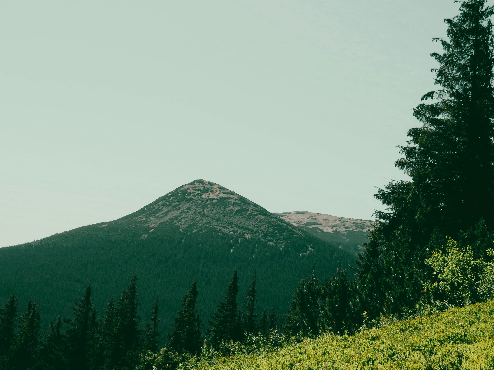
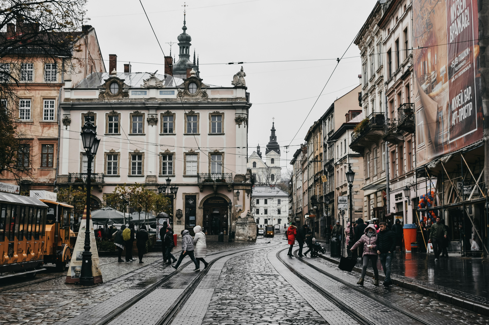
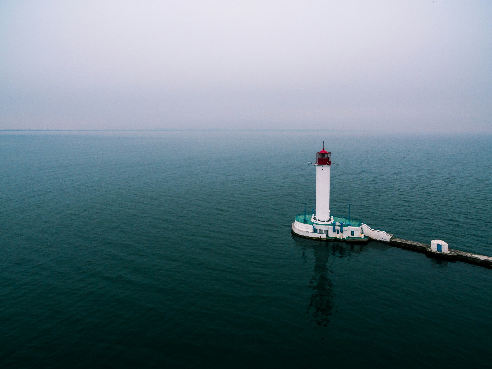
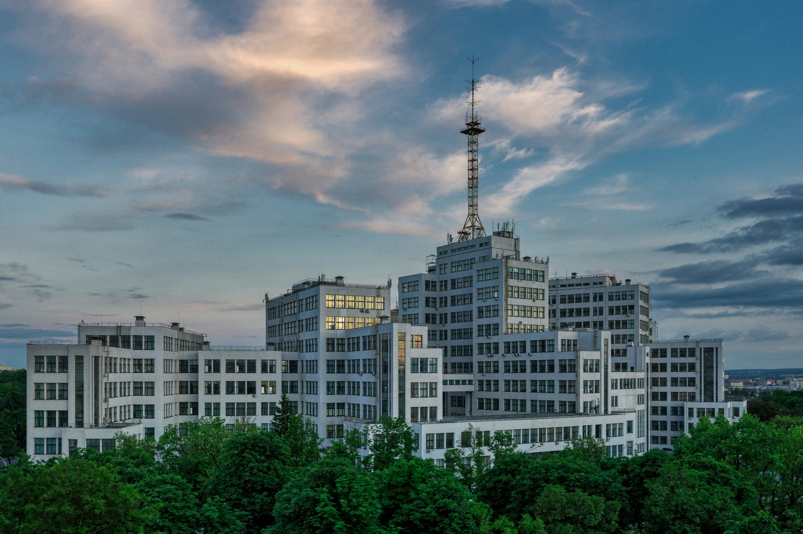

Пошук пригод у невідомих куточках: відкриваємо Україну
Запрошуємо в мальовничі Карпати
Україна славиться своєю природою, а особливо гірськими пейзажами Карпат. Гірські хребти, засніжені вершини і кришталево чисті гірські потоки чекають на тих, хто мріє відпочити в затишних селищах або вирушити в трекінгові маршрути.
Легендарний Львів: місто культури та смаку
Львів - це місто, що зачаровує своєю архітектурою, культурними заходами та смачною кухнею. Під час подорожі Львовом ви зможете відвідати старовинні площі, музеї, театри, а також смакувати найкращі страви української кухні.
Магія історії в Києві
Київ - давнє місто з багатою історією та культурою. Відвідавши Київ, ви зможете зануритися в атмосферу старовинних пам'яток, таких як Києво-Печерська Лавра, Софійський Собор, а також відчути пульс міста, прогулюючись по вулицях Хрещатика та Подолу.

Відпочинок на узбережжі Чорного моря
Україна має також чудові пляжі на узбережжі Чорного моря, де ви зможете насолодитися сонячними днями, водними видами спорту та відвідати унікальні курортні міста, такі як Одеса, Залізний Порт та Коблеве.
Харків: місто енергії та культури
Харків - це динамічне місто, яке вражає своєю енергією та різноманіттям культурних подій. Великі проспекти, архітектурні пам'ятки, сучасні музеї та театри створюють неповторну атмосферу, що притягує як туристів, так і місцевих жителів. Відвідавши Харків, ви зможете відчути пульс міста, насолодитися його культурною спадщиною та відвідати цікаві місцеві події.
Загадкова Стара Фортеця: культурна спадщина Західної України
Україна багата на історичні пам'ятки, серед яких особливе місце займають старовинні фортеці. Відвідавши такі місця, як Кам'янець-Подільська фортеця, ви зможете відчути дух минулих епох та насолодитися захоплюючими панорамами.